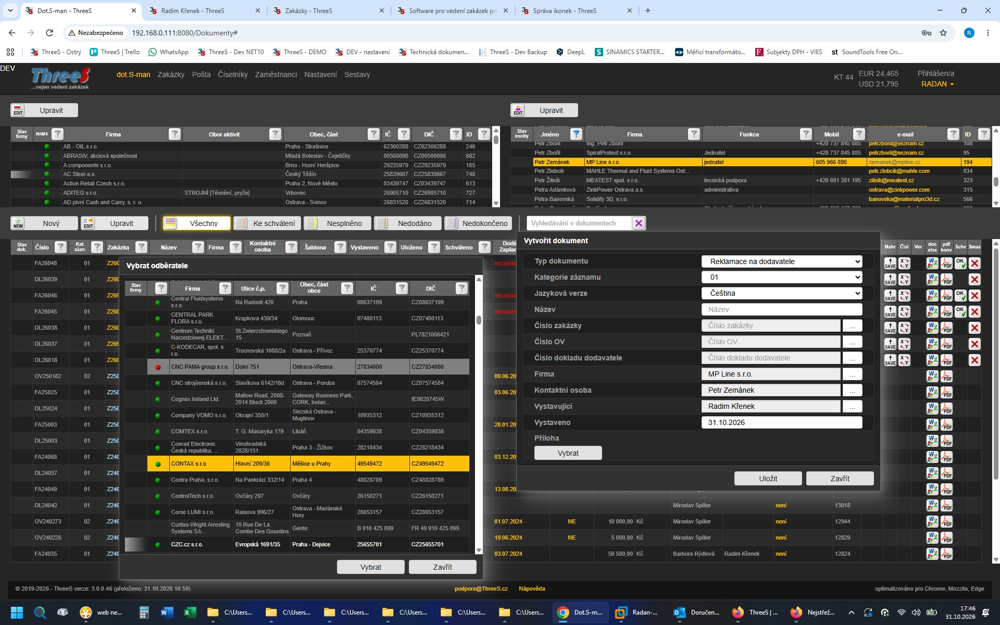

Zkušenost z reálné firmy tvořící komplexní produkty z oblasti automotive a zakázkového strojírenství.
Ve firmě z oblasti automotive a zakázkového strojírenství jsme řešili klasický problém. Všechno trvalo dlouho a panoval zmatek.
Nešlo jen o samotnou evidenci. Největší problém byla skutečná neprovázanost informací. Nikdo si nebyl jistý v odpovědích na základní otázky:
Bez jasných odpovědí na tyto otázky nebylo možné firmu efektivně řídit.
Po krátkém váhání jsme zavedli systém ThreeS. Teď máme vše na jednom místě a dnes bychom už neměnili. Škoda, že jsme to neudělali dříve. Navíc nám dodavatel upravil funkčnost podle našeho přání.
